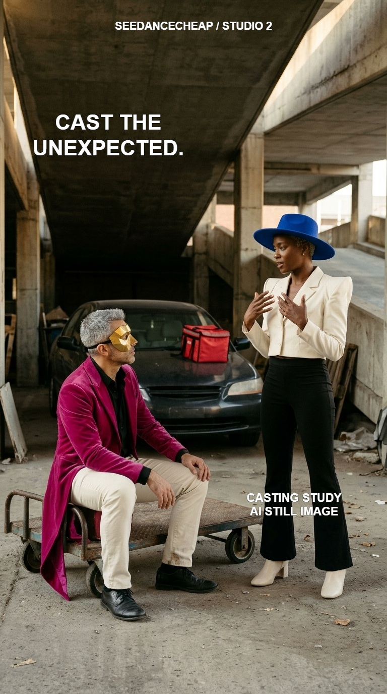
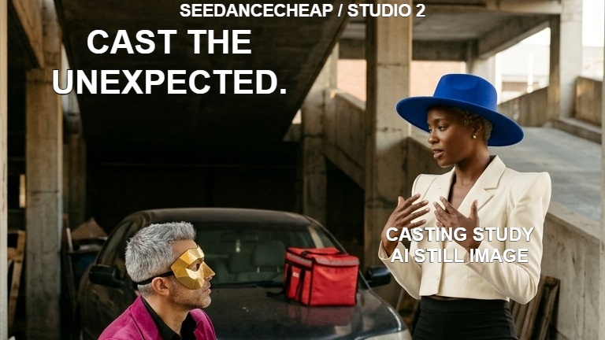
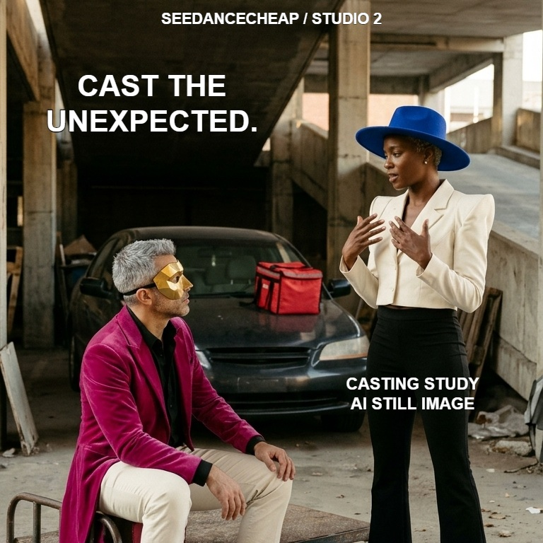

01 / PLACE THE CAST
Make both people readable
State who stands on the right and who sits on the left. Describe adult faces, hair and posture, with enough space for hands, hats and feet.
Studio 2 · Included AI images
A cobalt hat. A gold mask. Two fictional adults with distinct faces, silhouettes and wardrobes. Start with a clear casting frame for your next scene.
$0extra image credits for this example
Included image access unlocks after one completed AI video. Up to 1,000 images a day are shared across all customers, subject to capacity. Video generation has its own quote.
You can view this guide and download the original image and prompt without an account. Get the free editable poster kit, too.

State who stands on the right and who sits on the left. Describe adult faces, hair and posture, with enough space for hands, hats and feet.
Pair the woman’s angular ivory jacket and cobalt hat with the man’s long magenta tailcoat and faceted gold mask. Use shape, material and colour together.
Inspect faces, hands and clothing edges. On the ready image, choose Save as → Character, give it a name and save it to your library. The 30-day save uses no new generation, credits or daily image allowance.
The exact submitted text
Open Free AI images in Studio 2, choose Phone 9:16, and paste this prompt. Change the fictional characters and wardrobe to fit your scene. Creating an image is a separate action in Studio.
One photoreal cinematic casting-reference still, portrait 9:16. Two entirely original fictional adults, both full bodies readable, beneath a concrete parking-garage ramp. A black unbranded car sits behind them with a red insulated delivery bag on its hood; a low luggage trolley is in front. On the RIGHT stands a tall athletic dark-brown-skinned adult woman, a clearly different face, cropped platinum hair, a bold cobalt-blue wide-brim felt hat, an ivory cropped jacket with angular sculpted shoulders, black flared trousers and ivory ankle boots. Her face is unobstructed below the brim. Both hands are raised near her chest in a relaxed stunt-rehearsal pose. On the LEFT sits an olive-skinned adult man on the low trolley, with a new angular face, short silver hair and a fitted faceted metallic-gold half-mask over his eyes and upper cheeks. He wears a vivid magenta velvet tailcoat with long split tails, black shirt, cream trousers and black shoes. His legs and hands remain visible. Distinct adult facial features; no resemblance to a public figure. Warm 4300K late-afternoon side light enters from camera-left, with soft concrete bounce and natural deep shadows. Real skin texture, tactile wool felt and velvet, subtle film grain. Contact shadows anchor both people, trolley wheels and car. Rich cobalt, magenta and ivory accents against warm neutral concrete. One candid imperfection: a slight crease in the woman’s jacket sleeve. Medium-wide eye-level camera, enough room around the hats and boots. Single scene, no collage, no text, no logos, no weapons, no blood.
Free finishing workflow · actual Studio 2 exports
We used Crop Image and Brand Canvas to turn this casting still into a portrait, square and wide poster. One editable text layout appears across all three. These are casting-study images; the moving recast is still pending.



$0 to crop, brand and export. These local editing tools use no generation credits and work independently of AI providers. Bring your own images; no AI generation is needed to brand them. Import and export without signing in. Sign in to save a private browser copy. Creating new AI images is separate and follows the access conditions above. The files here can be downloaded without an account.
casting-brand-kit.brand.json from that folder. It contains our three source images and editable text layers. Change the text, or add your own images and remove ours before exporting your own set.We created and downloaded this still using SeedanceCheap’s included image generator on November 6, 2026. The successful request used 0 image credits. A first included-image attempt failed; one retry delivered the image above.
We also saved this completed image as a character and used Use in Genjutsu. It arrived as the selected image reference without another generation. This handoff prepares an input; it does not start a video or prove matching faces and motion.
The moving recast is still pending. A motion-guided video needs its own source clip, supported inputs, complete quote and review of the actual moving result.
Save the original, keep your prompt, and review the actual image before choosing a video workflow. Only use references you have permission to use.
Open included AI images →
Add your own title with free Brand Canvas →